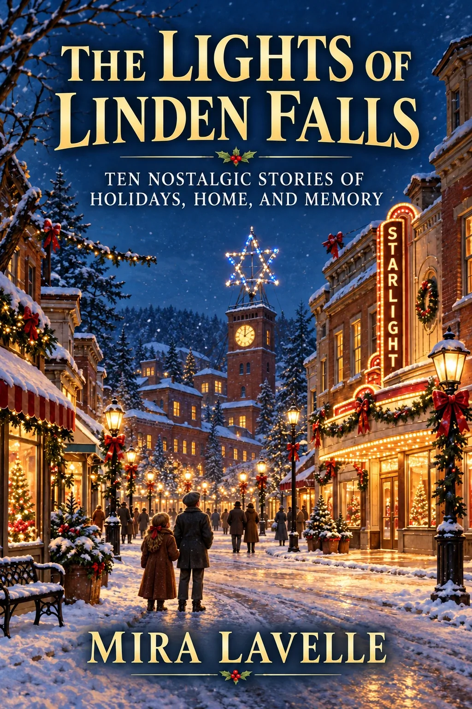

The Collection
Return to a place where the Starlight Theatre still glows, Bell’s Department Store remembers every Christmas, and a handmade star shines above the old mill tower.
Spanning 1943 to the present day, these ten connected stories follow the families of Linden Falls through wartime holidays, snowbound Thanksgivings, missed trains, closing stores, childhood parades, second chances, and the memories that become part of a town.
Designed in large print for comfortable reading, The Lights of Linden Falls is a warm and thoughtful holiday gift for parents, grandparents, and anyone who remembers when the smallest traditions meant the most.
Linden Falls
Across generations, recurring families, places, and traditions bind these stories together. Bell’s Department Store, the Starlight Theatre, the Riverside Diner, the old mill tower, and the railway station hold the town’s shared history.
Above them all shines Tommy Bell’s handmade star—an imperfect light carried forward through memory, continuity, and community.
Story Highlights
Why Readers Will Love It
Thanksgiving and Christmas traditions seen through changing families and decades.
Familiar streets and gathering places return from one story to the next.
Warmth without sentimentality, and memories that make room for hardship and hope.
A thoughtful, accessible edition created for an easy reading experience.
Gift Edition
Created in large print for comfortable reading, The Lights of Linden Falls is designed for parents, grandparents, senior readers, and anyone who treasures stories about family, resilience, homecoming, and the traditions we carry forward.
Releases October 22, 2026
Join the list and receive one email when the book becomes available. No noise—just the next story waiting at home.
Every light carries a memory.
Ten nostalgic stories of holidays, home, and memory.
Buying direct helps support the author and independent publishing.